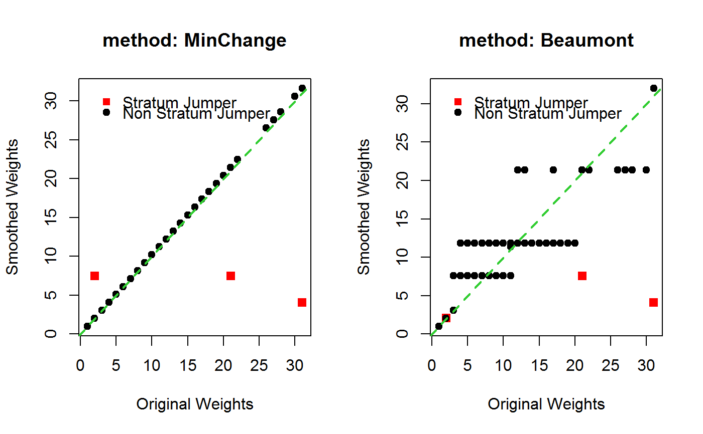
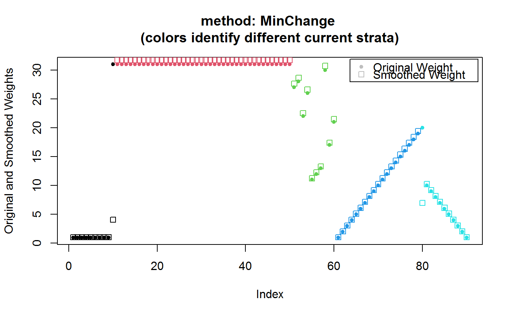
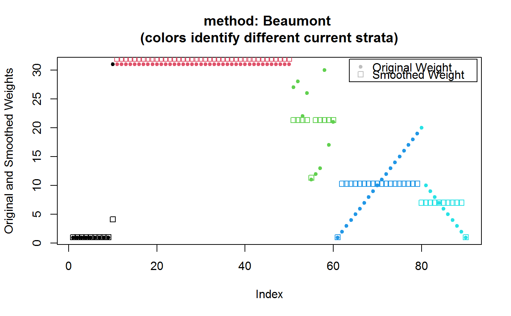

smooth.strat.jump.RdGiven a stratified one-stage unit sampling design object, this function smooths survey weights to mitigate estimation issues that may arise from stratum jumpers.
smooth.strat.jump(design, curr.strata, method = c("MinChange", "Beaumont"))
| design | Object of class |
|---|---|
| curr.strata | Formula identifying the current strata variable, as observed at survey-time (see ‘Details’). |
| method | The smoothing method (see ‘Details’). The default method |
In business surveys, stratum jumpers are sampling units (e.g. firms or establishments) whose stratum information observed at survey-time happens to differ from the stratum information that was available in the sampling frame at design-time.
If the current value of the strata variable (i.e. the one observed at survey-time) is reliable, stratum jumpers are evidence of frame imperfections (typically, the frame was not up-to-date). Empirically, stratum jumpers are often units that underwent a fast growth in size from sampling-time to survey-time.
In most enterprise surveys the sampling design is such that smaller firms receive a smaller inclusion probability (and hence a larger design weight). Therefore, stratum jumpers often have a “too large” weight, in the sense that they would have received a smaller weight had their actual size been known at sampling-time. When these units also happen to have a large value of interest variable y, they may become influential in estimation. Even though stratum jumpers may exist in household surveys too, business surveys are much more exposed to the risk that stratum jumpers unduly influence estimation, as their target populations are typically highly skewed with respect to many interest variables. As a consequence, in business surveys, stratum jumpers can result in inefficient (and, under some circumstances, even biased) design-based estimators.
Despite stratum jumpers are actually a concern only when both their design weight w and their y value (as measured at survey-time) conspire to yield an influential value of w * y, function smooth.strat.jump tries to mitigate their potential adverse impact by smoothing the weights without using any information on y. Such a choiche is driven by two major aims. First, the methodology must preserve the universality of the weights (i.e. the same weights must be used to compute estimates for whatever interest variables y). Second, the methodology should not require explicit modeling efforts and be easy enough to scale to production settings that need automated and replicable procedures.
Argument design identifies the survey design object that is (possibly) affected by stratum jumpers and contains the weights that will be smoothed. In case no stratum jumpers are found, the function will raise an error. Object design can only be a one-stage unit sampling design. Moreover, it must be a non-calibrated object. Should any of these conditions be false, the function would raise an error. Note, lastly, that function smooth.strat.jump will not smooth further weights that have already been smoothed. This is a deliberate design choice, devised to discourage over-smoothing and cosmetic adjustments of the survey weights.
Formula curr.strata defines the current strata variable, as observed at survey-time. This is different from the design strata variable used to build object design using function e.svydesign, as the latter was measured at sampling-time. Function smooth.strat.jump will flag as stratum jumpers all the units whose current stratum differs from the design one. Note that the function will handle properly even design objects whose strata were collapsed for variance estimation purposes (via collapse.strata), by accessing and using the original non-collapsed design strata. Note that, in case current strata become available only after object design was created, you may use function des.addvars to add this new column to the old object.
The weight smoothing process entails two steps:
The weights are smoothed according to a given method (see below): w -> w1
The weights w1 of all units are scaled by a global factor so as to preserve the initial overall sum of weights: w1 -> w2 = scale * w1 with scale = sum(w)/sum(w1)
Argument method controls the smoothing algorithm. Two methods can be selected: 'MinChange' (the default) and 'Beaumont' (which implements the proposal of [Beaumont, Rivest 09]). Note that the methods only differ with respect to step 1., as step 2. is identical for both of them.
The step 1 working mechanism of these methods can be summarized as follows:
‘MinChange’
Only the weights of stratum jumpers are smoothed, by setting their value to the average weight of units belonging to the same current stratum. Weights of all other units are left unchanged.
‘Beaumont’
The weights of all units are smoothed, by setting their value to the average weight of units belonging to the same current stratum, with the exception of minimum weight units, whose weights are left unchanged. Therefore all weights, excluding only minimum weights within each current stratum, are smoothed. Note that this smoothing affects all current strata, even those that do not include any stratum jumper.
In summary, both methods often lead to very similar smoothed weights for units that are stratum jumpers. However method 'Beaumont' smooths the weights of all other (i.e. non stratum jumpers) units much more aggressively than method 'MinChange' (which only minimally alters them in step 2. to preserve the overall sum of weights). Moreover, method 'MinChange' treats stratum jumpers that grew in size and those that decreased in size on the same footing, whereas method 'Beaumont' typically smooths the weights of the former more than those of the latter (owing to its minimum weight preservation constraint, see ‘Examples’).
Note that every call to smooth.strat.jump generates, by side effect, a diagnostics data structure named strat.jump.status into the .GlobalEnv (see ‘Examples’). This is a data frame with one row for each stratum jumper unit, whith the following columns:
Column Meaning
IDS....................Unit identifier
W......................Initial weight
DES_STR................Design stratum
DES_STR_W_AVG..........Average of initial weights within the design stratum
CURR_STR...............Current stratum
CURR_STR_W_AVG.........Average of initial weights within the current stratum
N_JUMP_DES_CURR_STR....Number of stratum jumpers that jumped between the
design stratum and the current stratum (NOTE: in any
direction)
W_SMOOTH_UNSC..........Unscaled smoothed weight (as obtained after step 1)
W_SMOOTH...............Smoothed weight (scaled, as obtained after step 2)
An object of the same class as design. The data frame it contains (stored in its $variables slot) includes the smoothed weights columns and a column that flags the stratum jumpers. The name of the smoothed weights column is obtained by pasting the name of the initial weights column with the string ".smooth". Stratum jumpers are identified by a new (logical) column named is.jumper.
Smoothing survey weights is a model-based approach, see [Beaumont 08] (e.g.method = 'Beaumont' basically models the smoothed weights as a function of the current strata using a one-way ANOVA model plus constraints). Therefore Horvitz-Thompson-like estimators that use smoothed weights - instead of design weights - cannot be guaranteed to be design-unbiased. Of course, the need to smooth the weights arises precisely because the existence of stratum jumpers already signals a departure from the ideal conditions of design-based inference.
As the design-unbiasedness of Horvitz-Thompson estimators in probability sampling rests on using design weights that are reciprocals of inclusion probabilities, smoothing methods that change the design weights the least appear preferable in a design-based perspective. For this reason, function smooth.strat.jump adopts the 'MinChange' method by default. One could, nonetheless, argue that the 'Beaumont' method could sometimes perform better (e.g. lead to more efficient estimates) from a model-based perspective.
Regardless the choice of argument method, in order to reduce any possible design-bias introduced by smoothing the weights, users are advised to calibrate the smoothed weights using any auxiliary information available from external sources that are more up-to-date than the sampling frame.
Beaumont, J. F. (2008). A new approach to weighting and inference in sample surveys. Biometrika, 95(3), 539-553.
Beaumont, J. F., Rivest, L. P. (2009). Dealing with outliers in survey data. In Handbook of statistics (Vol. 29, pp. 247-279). Elsevier.
e.svydesign to bind survey data and sampling design metadata and e.calibrate for calibrating smoothed survey weights by leveraging auxiliary information that is more up-to-date than the sampling frame (a warmly suggested option).
################################################################################## # Build [Beaumont, Rivest 09] example dataset, containing: # # - a first stratum 'A' that, at survey time, contains one large weight stratum # # jumper received from design-stratum 'B' # # - a second stratum 'B' that, at survey time, does not contain stratum jumpers # # # # and enhance it with: # # - a third stratum 'C' that, at survey time, does not contain stratum jumpers # # - a fourth stratum 'D' that, at survey time, does not contain stratum jumpers # # - a fifth stratum 'E' that, at survey time, contains two stratum jumpers, both # # received from design-stratum 'D', one with small and one with medium weight # ################################################################################## BR <- data.frame( id = 1:90, des.strata = factor(rep(c("A", "B", "C", "D", "E"), c(9, 41, 10, 20, 10))), curr.strata = factor(rep(c("A", "B", "C", "D", "E"), c(10, 40, 10, 19, 11))), w = c(rep(c(1, 31), c(9, 41)), c(27, 28, 22, 26, 11, 12, 13, 30, 17, 21), 2:21, 11:2) ) BR$curr.strata[61] <- "E" # Have a look at the data: BR#> id des.strata curr.strata w #> 1 1 A A 1 #> 2 2 A A 1 #> 3 3 A A 1 #> 4 4 A A 1 #> 5 5 A A 1 #> 6 6 A A 1 #> 7 7 A A 1 #> 8 8 A A 1 #> 9 9 A A 1 #> 10 10 B A 31 #> 11 11 B B 31 #> 12 12 B B 31 #> 13 13 B B 31 #> 14 14 B B 31 #> 15 15 B B 31 #> 16 16 B B 31 #> 17 17 B B 31 #> 18 18 B B 31 #> 19 19 B B 31 #> 20 20 B B 31 #> 21 21 B B 31 #> 22 22 B B 31 #> 23 23 B B 31 #> 24 24 B B 31 #> 25 25 B B 31 #> 26 26 B B 31 #> 27 27 B B 31 #> 28 28 B B 31 #> 29 29 B B 31 #> 30 30 B B 31 #> 31 31 B B 31 #> 32 32 B B 31 #> 33 33 B B 31 #> 34 34 B B 31 #> 35 35 B B 31 #> 36 36 B B 31 #> 37 37 B B 31 #> 38 38 B B 31 #> 39 39 B B 31 #> 40 40 B B 31 #> 41 41 B B 31 #> 42 42 B B 31 #> 43 43 B B 31 #> 44 44 B B 31 #> 45 45 B B 31 #> 46 46 B B 31 #> 47 47 B B 31 #> 48 48 B B 31 #> 49 49 B B 31 #> 50 50 B B 31 #> 51 51 C C 27 #> 52 52 C C 28 #> 53 53 C C 22 #> 54 54 C C 26 #> 55 55 C C 11 #> 56 56 C C 12 #> 57 57 C C 13 #> 58 58 C C 30 #> 59 59 C C 17 #> 60 60 C C 21 #> 61 61 D E 2 #> 62 62 D D 3 #> 63 63 D D 4 #> 64 64 D D 5 #> 65 65 D D 6 #> 66 66 D D 7 #> 67 67 D D 8 #> 68 68 D D 9 #> 69 69 D D 10 #> 70 70 D D 11 #> 71 71 D D 12 #> 72 72 D D 13 #> 73 73 D D 14 #> 74 74 D D 15 #> 75 75 D D 16 #> 76 76 D D 17 #> 77 77 D D 18 #> 78 78 D D 19 #> 79 79 D D 20 #> 80 80 D E 21 #> 81 81 E E 11 #> 82 82 E E 10 #> 83 83 E E 9 #> 84 84 E E 8 #> 85 85 E E 7 #> 86 86 E E 6 #> 87 87 E E 5 #> 88 88 E E 4 #> 89 89 E E 3 #> 90 90 E E 2#> curr.strata #> des.strata A B C D E #> A 9 0 0 0 0 #> B 1 40 0 0 0 #> C 0 0 10 0 0 #> D 0 0 0 18 2 #> E 0 0 0 0 10# Use the BR data frame to build a one stage stratified unit sampling design: BRdes <- e.svydesign(data=BR, ids=~id, strata=~des.strata, weights=~w) ## Now smooth the weights: ## Method: MinChange (the default) M.smooth <- smooth.strat.jump(BRdes, ~curr.strata)#> #> # Found 3 stratum jumpers (out of 90 units), see strat.jump.status #>M.smooth#> Stratified Independent Unit Sampling Design (with replacement) #> - [5] strata #> - [90] units #> #> Call: #> smooth.strat.jump(BRdes, ~curr.strata)#> id des.strata curr.strata w is.jumper w.smooth #> 1 1 A A 1 FALSE 1.020229 #> 2 2 A A 1 FALSE 1.020229 #> 3 3 A A 1 FALSE 1.020229 #> 4 4 A A 1 FALSE 1.020229 #> 5 5 A A 1 FALSE 1.020229 #> 6 6 A A 1 FALSE 1.020229# Inspect the effects of smoothing on the stratum jumpers: strat.jump.status#> IDS W DES_STR DES_STR_W_AVG CURR_STR CURR_STR_W_AVG N_JUMP_DES_CURR_STR #> 10 10 31 B 31.0 A 4.000000 1 #> 61 61 2 D 11.5 E 7.333333 2 #> 80 80 21 D 11.5 E 7.333333 2 #> W_SMOOTH_UNSC W_SMOOTH #> 10 4.000000 4.080916 #> 61 7.333333 7.481679 #> 80 7.333333 7.481679## Method: Beaumont B.smooth <- smooth.strat.jump(BRdes, ~curr.strata, method = "Beaumont")#> #> # Found 3 stratum jumpers (out of 90 units), see strat.jump.status #>B.smooth#> Stratified Independent Unit Sampling Design (with replacement) #> - [5] strata #> - [90] units #> #> Call: #> smooth.strat.jump(BRdes, ~curr.strata, method = "Beaumont")# Inspect the effects of smoothing on the stratum jumpers: strat.jump.status#> IDS W DES_STR DES_STR_W_AVG CURR_STR CURR_STR_W_AVG N_JUMP_DES_CURR_STR #> 10 10 31 B 31.0 A 4.000000 1 #> 61 61 2 D 11.5 E 7.333333 2 #> 80 80 21 D 11.5 E 7.333333 2 #> W_SMOOTH_UNSC W_SMOOTH #> 10 4.000000 4.129461 #> 61 2.000000 2.064730 #> 80 7.333333 7.570678## As anticipated, smoothed weights of stratum jumpers are mostly similar for ## both methods. However the methods differ significantly when it comes to non ## stratum jumpers. This is clearly shown in the following plots. ## Plot 1 - START opar <- par("mfcol" = c(1, 2)) # M.smooth with(M.smooth$variables, plot(w, w.smooth, pch = c(19, 15)[1 + is.jumper], col = c("black", "red")[1 + is.jumper], cex = c(1,1.2)[1 + is.jumper], xlab = "Original Weights", ylab = "Smoothed Weights", main = "method: MinChange")) abline(0:1, col = "limegreen", lwd = 2, lty = 2) legend("topleft", legend = c("Stratum Jumper", "Non Stratum Jumper"), col = c("red", "black"), pch = c(15, 19), bty = "n", text.col = "black", inset = c(0.05, 0.05) ) # B.smooth with(B.smooth$variables, plot(w, w.smooth, pch = c(19, 15)[1 + is.jumper], col = c("black", "red")[1 + is.jumper], cex = c(1,1.2)[1 + is.jumper], xlab = "Original Weights", ylab = "Smoothed Weights", main = "method: Beaumont"))legend("topleft", legend = c("Stratum Jumper", "Non Stratum Jumper"), col = c("red", "black"), pch = c(15, 19), bty = "n", text.col = "black", inset = c(0.05, 0.05) )par(opar) ## Plot 1 - END ## Plot 2 - START # M.smooth with(M.smooth$variables, plot(w, pch = 20, col = curr.strata, ylab = "Original and Smoothed Weights", main = "method: MinChange \n(colors identify different current strata)"))legend("topright", legend = c("Original Weight", "Smoothed Weight"), col = rep("grey", 2), pch = c(20, 0), text.col = "black", inset = c(0.01, 0.01) )# B.smooth with(B.smooth$variables, plot(w, pch = 20, col = curr.strata, ylab = "Original and Smoothed Weights", main = "method: Beaumont \n(colors identify different current strata)"))legend("topright", legend = c("Original Weight", "Smoothed Weight"), col = rep("grey", 2), pch = c(20, 0), text.col = "black", inset = c(0.01, 0.01) )## Plot 2 - END # Although, as seen above, non-negligible differences in smoothed weights exist # at unit level, both methods perform similarly in terms of strata averages... ## Initial weights, design strata: with(BR, tapply(w, des.strata, mean))#> A B C D E #> 1.0 31.0 20.7 11.5 6.5#> A B C D E #> 4.000000 31.000000 20.700000 11.500000 7.333333## Smoothed weights, current strata, method MinChange: with(M.smooth$variables, tapply(w.smooth, curr.strata, mean))#> A B C D E #> 1.326298 31.627099 21.118740 11.732634 6.773187## Smoothed weights, current strata, method Beaumont: with(B.smooth$variables, tapply(w.smooth, curr.strata, mean))#> A B C D E #> 1.342075 32.003321 20.368566 11.384694 6.653020# ...as expected